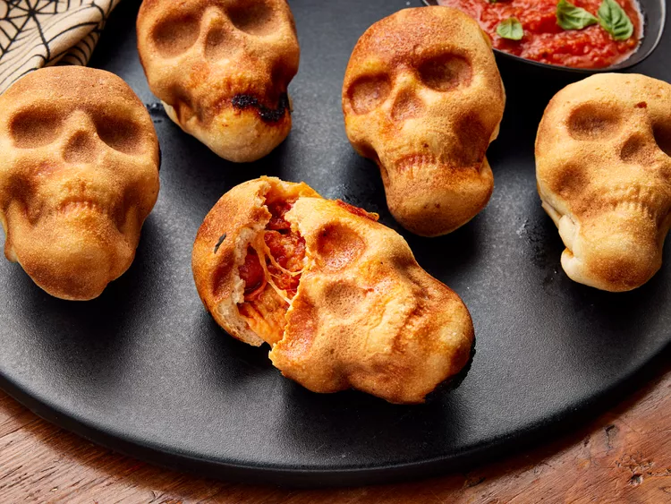
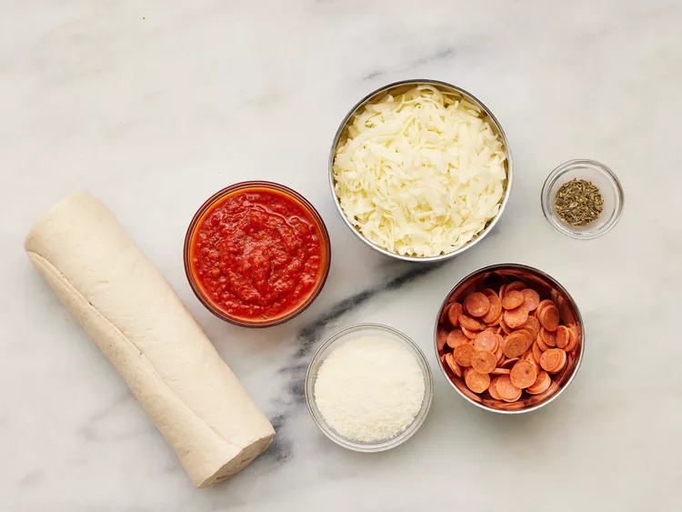
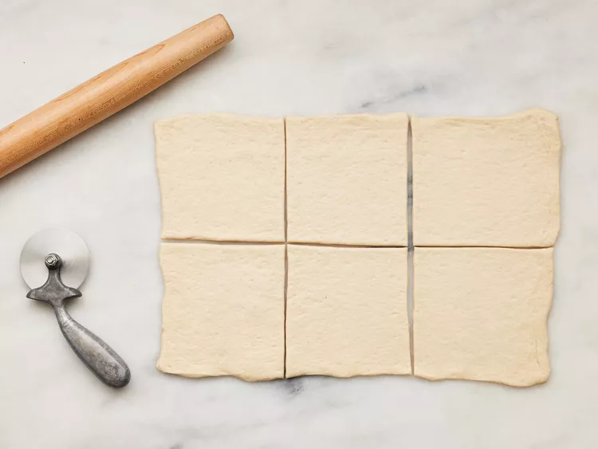
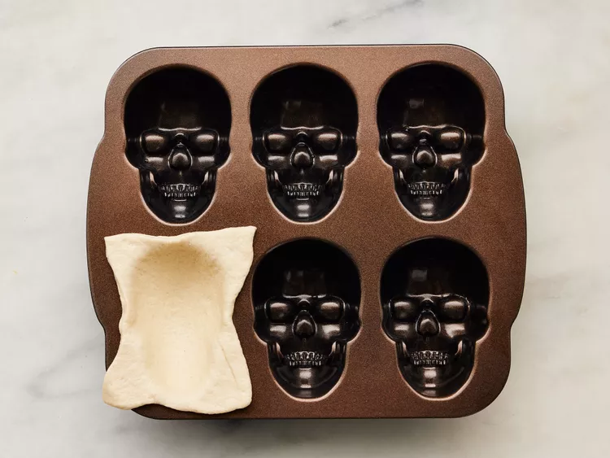
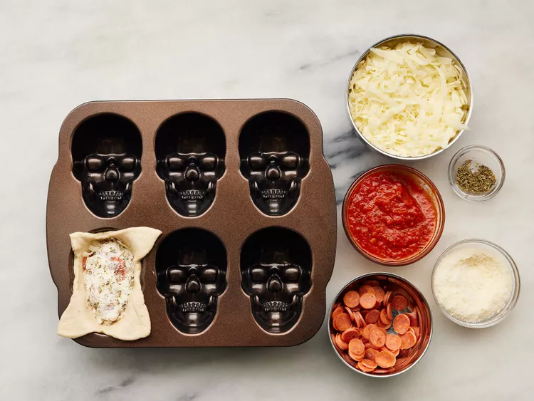
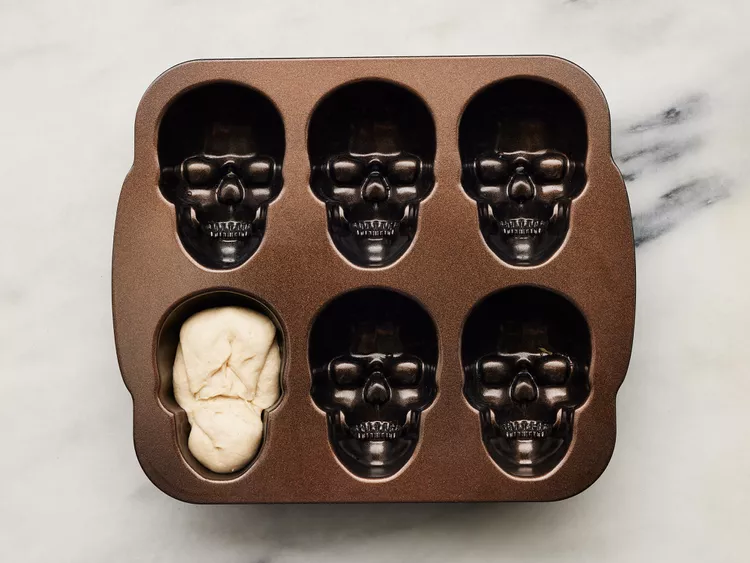
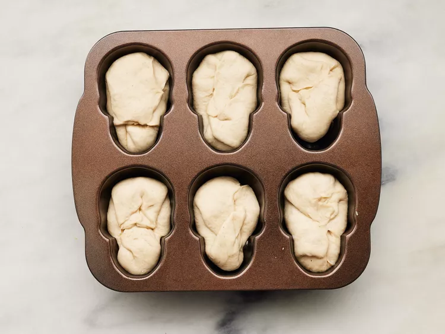
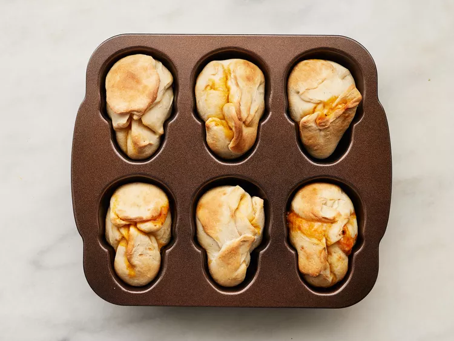
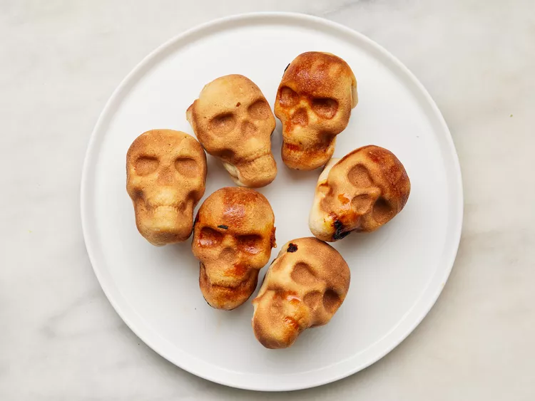

Pizza Skulls

Description
Nothing not to love here! They're so fun and festive—perfect for your next Halloween party.
These festive skull-shaped pizza bites went viral on TikTok—and for good reason. They're cheesy, saucy, the perfect amount of crispy, and incredibly festive for Halloween. What’s not to love? Whether you want an appetizer for your Halloween party or a fun, quick dinner before trick-or-treating, you need to know how to make these pizza skulls using store-bought pizza dough and your favorite pizza toppings.
Ingredients
- 1 (13.8-oz.) can refrigerated pizza crust dough (such as Pillsbury)
- 4 1/2 ounces low moisture part skim mozzarella, shredded
- 3/4 cup pizza sauce, plus more for serving
- 6 tablespoons mini pepperoni
- 1 1/2 ounces Parmesan cheese, grated
- 1 1/2 teaspoons dried Italian seasoning
Steps:
- Gather all the ingredients.

- Preheat oven to 400℉. Working on a clean surface, roll out dough to a 15- x 10-inch rectangle. Cut dough into 6 (5- x 5-inch) squares.

- Working with one piece of dough at a time, lay one square of dough in one cavity of a nonstick 6-cavity skull-shaped cakelet pan.

- Fill the dough by layering 1 tablespoon mozzarella, 1 tablespoon pizza sauce, 1 tablespoon pepperoni, 1 tablespoon mozzarella, 1 tablespoon pizza sauce, 1 tablespoon mozzarella, 1 tablespoon parmesan, and 1/4 teaspoon Italian seasoning in the center of the dough square.

- Fold sides of dough together and pinch tightly to seal, trimming and discarding any excess dough if necessary.

- Repeat filling and sealing process with remaining dough squares and remaining cheese, pizza sauce, pepperoni, and Italian seasoning.

- Bake in preheated oven until baked through and lightly golden, 16 to 18 minutes.

- Carefully remove baked skulls from pan and transfer to a serving plate. Let cool 5 minutes before serving with additional pizza sauce for dipping, if desired.
